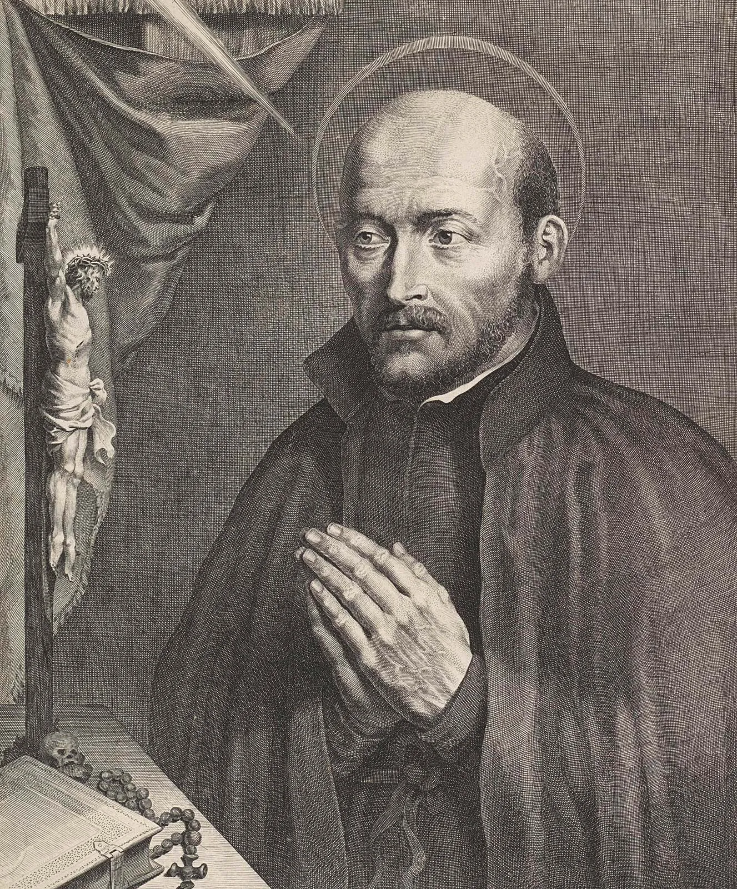

Setiap hari, kita dihadapkan pada banyak keputusan. Terkadang, menentukan pilihan mana yang kita pilih dapat terasa sulit. Pilihan berdasarkan kesenangan sementara dapat terasa seperti pilihan yang benar. Namun, kesenangan tersebut cepat memudar dan meninggalkan kekosongan dan kehampaan batin tanpa makna sejati. Saat membuat keputusan, visi dan tujuan yang tinggi perlu menjadi pertimbangan.
→ Tujuan hidup manusia adalah untuk memuji, menghormati, dan mengabdi kepada Allah dan menyelamatkan jiwanya
→ Segala sesuatu di bumi diciptakan untuk menolong manusia mencapai tujuan hidupnya. Manusia harus menggunakannya dengan baik dan melepasnya jika menjauhkan dari Tuhan
→ Manusia harus mengatur dirinya agar tidak melekat dan dikuasai hal-hal duniawi

Keterangan: Santo Ignasius Loyola menulis LR 23 sebagai salah satu latihan rohaninya
Konsolasi dapat diartikan sebagai keadaan saat hati dekat dengan Tuhan dan terdorong untuk melakukan hal positif, meski kadang disertai penyesalan atas dosa.
Desolasi dapat diartikan sebagai keadaan saat hati jauh dengan Tuhan dan hati dipenuhi kekeringan rohani dan kegelapan batin, serta ditandai beberapa karakteristik tertentu.
Terdapat beberapa karakteristik desolasi, yaitu:
Keterangan: Seseorang yang mengalami keadaan desolasi
Alasan mengalami desolasi:
Cara melewati fase desolasi:
Suara hati adalah suara yang mengarahkan kita ke jalan yang benar.
Penyebab Suara Hati Bisa Keliru: Kurang ilmu/salah informasi, kebiasaan buruk yang menumpulkan kepekaan batin, pengaruh lingkungan/budaya/tekanan ego, serta jarang melatih kejujuran diri
Cara Melatih Suara Hati: Belajar mencari kebenaran dari sumber yang baik, membangun kesadaran dan mawas diri, serta meminta nasihat dari orang bijak
Roh baik adalah roh yang mengajak kita ke cinta dan perdamaian, sedangkan roh jahat adalah roh yang memberikan keraguan dan egoisme. Seringkali, kita memiliki kegelapan yang familiar (roh jahat) dibandingkan terang Kristus (roh baik). Perang antara roh baik dan roh jahat telah dikisahkan sebagai perang antara daging dan roh dalam manusia, gelap dan terang, serta gandum dan rumput yang tumbuh di ladang yang sama. roh baik dan roh jahat memiliki cara kerja tertentu berdasarkan kondisi batin seseorang, yaitu:
Orang yang menjauh dari Tuhan: Roh jahat datang dengan halus menawarkan kesenangan semu, sedangkan roh baik menyesakkan hati dengan teguran keras agar kembali kepada Tuhan
Orang yang semakin dekat dengan Tuhan: Roh jahat menyerang bagian sensitif, memicu keraguan dan melumpuhkan semangat, sedangkan roh baik memberi inspirasi, kedamaian, dan kekuatan untuk terus berbuat baik
Roh jahat memiliki 6 ciri yaitu:

Keterangan: Roh baik dan roh jahat mencoba mengajak seseorang ke jalan mereka masing-masing
Discernment dilakukan untuk mengenali perasaan dan membedakan roh baik dan roh jahat. Langkah-langkah discernment adalah:
→ Mengenali dan menamai perasaan yang dominan dirasakan dalam diri Mendeskripsikan situasi batin yang dialami, apakah membawa kemajuan rohani (kedamaian, kedekatan dengan Tuhan) atau kemunduran rohani (kekacauan, ketakutan, keraguan)
→ Mengidentifikasi dorongan roh untuk membedakan apakah dorongan berasal dari roh baik (memberi inspirasi dan kekuatan) atau roh jahat (menyesatkan dengan kesenangan semu atau ketakutan)
Email: 2516022.jenson@kanisius.sch.id
Telepon: +62 0819-0867-5410
© 2026 - Dibuat dengan HTML